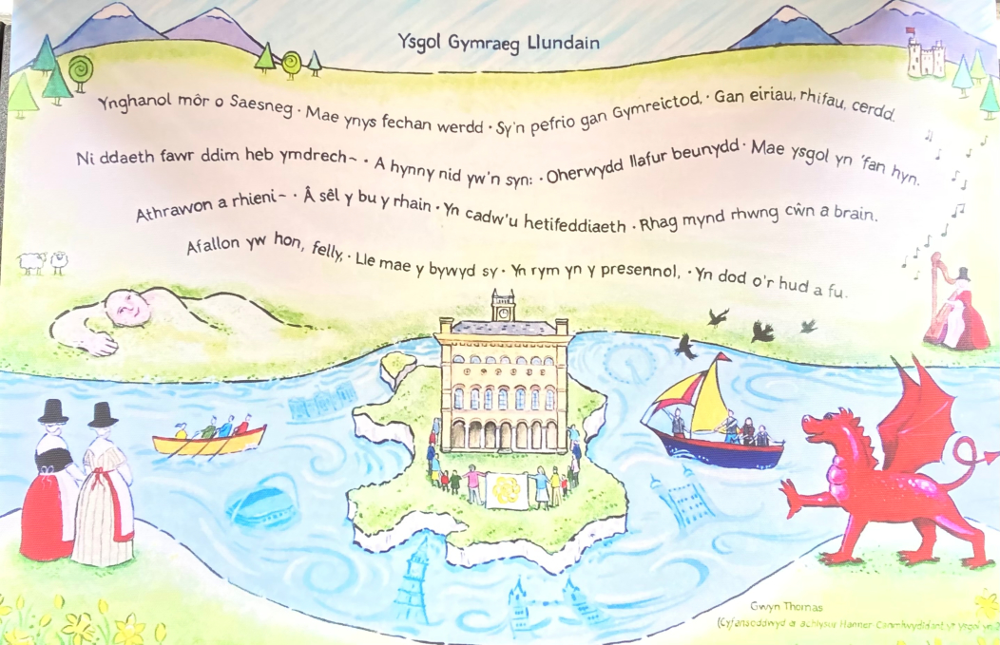
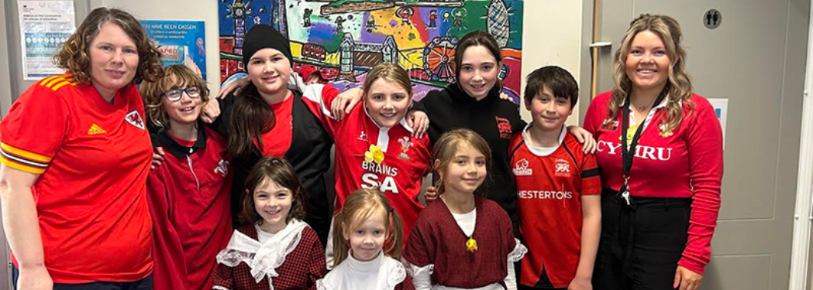

Dwy iaith, mwy o hyder
Mae plant yn datblygu Cymraeg a Saesneg bob dydd, ac mae'r ysgol yn pwysleisio bod dwyieithrwydd yn gallu agor y drws i drydedd a phedwaredd iaith.

Addysg gynradd Gymraeg ddwyieithog yn Llundain
Ysgol fach, gynnes a blaengar i blant 3 i 11 oed, lle mae'r Gymraeg, gofal a chwilfrydedd yn agor drysau.
A warm, ambitious Welsh-medium primary school in Hanwell, helping children become confident bilingual learners.
Croeso / Welcome
Mae Ysgol Gymraeg Llundain yn ysgol fechan, gyfeillgar yn Hanwell, Ealing. Mae disgyblion rhwng 3 ac 11 oed yn dysgu trwy'r Gymraeg a'r Saesneg, gyda'r nod o dyfu'n gwbl ddwyieithog erbyn diwedd Blwyddyn 6.
This prototype presents the school clearly for prospective parents, applicants, staff and the wider Welsh community.
Pam addysg Gymraeg?
Mae plant yn datblygu Cymraeg a Saesneg bob dydd, ac mae'r ysgol yn pwysleisio bod dwyieithrwydd yn gallu agor y drws i drydedd a phedwaredd iaith.
Mae Eisteddfodau, cerddoriaeth, celf, ymweliadau â Llangrannog a digwyddiadau Cymraeg Llundain yn gwneud yr iaith yn fyw.
Mae dosbarthiadau llai a thîm gofalgar yn helpu staff i deilwra dysgu a meithrin hyder academaidd, diwylliannol a phersonol.
Amdanom ni
Dechreuodd stori'r ysgol yn 1958 trwy ymdrech rhieni Cymraeg Llundain. Heddiw, mae'r ysgol wedi ei lleoli yng Nghanolfan Gymunedol Hanwell ac yn rhan o The Welsh Schools Trust.
Darllen mwy am yr ysgol
Derbyniadau a ffioedd
Derbynnir plant i'r Meithrin ar ôl eu pen-blwydd yn 3 oed, ac i'r Dosbarth Derbyn ym mis Medi ar ôl iddynt droi'n 4 oed. Mae manylion ffioedd a chymorth ar gael yn glir.

Cymuned a diwylliant
Mae cysylltiadau â'r Urdd, Canolfan Cymry Llundain, capeli, grwpiau Cymraeg a digwyddiadau lleol yn helpu plant i deimlo eu bod yn perthyn i gymuned ehangach.
Archwilio'r gymunedRecriwtio / Careers
Rydym yn croesawu addysgwyr a staff sy'n credu mewn dysgu dwyieithog, perthyn a phosibilrwydd.
Gweld cyfleoeddLleoliad a theithio
Ysgol Gymraeg Llundain
Canolfan Gymunedol Hanwell, Westcott Crescent, Hanwell, London W7 1PD
The school is based on the first floor of Hanwell Community Centre and welcomes families from across London.
Cysylltu â'r swyddfaCysylltu